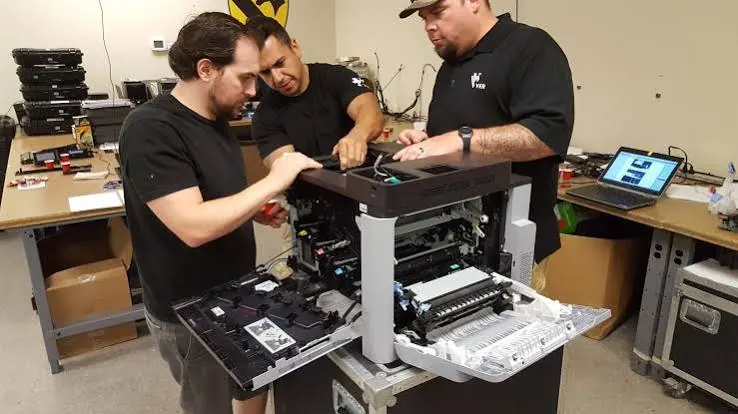

Office & business
Why Choose Professional Laptop and Printer Repair Services?
Explore the benefits of professional laptop and printer repair, including accurate diagnosis, safer repairs, suitable parts, data protection and service accountability.
Introduction
There can be a temptation to search for solutions online or attempt to repair the issue yourself when your laptop/printer has an issue. Whilst there are some simple issues you can safely resolve as a user, hardware, electrical and more complex software issues will require the correct tools and knowledge. Attempting to incorrectly repair an issue could result in damage to a component, an impact on warranty and risk to important data
Professional laptop/printer repair services will aim to identify the issue and suggest the correct resolution. A good technician will want to gather information and complete tests, they will then explain the issue and discuss repair options. This article will outline why using a professional repair service can be beneficial and what to look for.
1. Accurate Diagnosis
Many issues with devices can have multiple potential causes. With laptops, you may experience shutdowns due to overheating, battery/charger issues, memory issues and OS issues. You may experience poor print quality with your printer due to an issue with consumables, printhead, incorrect settings and worn parts.
Without completing tests repairing may cause unnecessary costs. A professional repair service will complete a thorough diagnosis to identify the correct cause. The technician will want to investigate connections, component health, software settings and recreate the issue.
Ask the service what the diagnosis fee covers. Will it be reduced if you agree to the repair? It’s a good idea to ask for a clear explanation so you can understand exactly what is causing the issue. If there are multiple components that can cause similar issues, it’s important to have a good diagnosis.

2. Less Risk Of Damage
Laptops and printers can be quite fragile with small components, delicate connections and sensitive components. Laptops can be difficult to open with clips, ribbon cables, sticky-back components and specific screws depending on the model. Printers can have many moving parts including gears, rollers, sensors and hot components.
If you don’t have the right tools or experience, you may damage connections, strip screws, damage cables and fit components incorrectly. Repairs involving electrical and batteries should be handled carefully. Never attempt to repair a swollen Li-Ion battery, faulty power adapter or smell of burning.
Professional technicians will handle components correctly. Ask to see if they have any experience with the specific model and if the repair will be suitable for your device. Don’t begin any repairs until you fully understand what will be done and any important risks involved.
3. Correct Parts Used
The reliability of your repair will depend on the parts and how they are installed. Laptops will require specific parts such as batteries, keyboards, screens, fans and storage to match your exact model or hardware revision. Printers will require specific consumables and parts to match the manufacturer.
A professional service will be able to identify the correct part number. They will also be able to explain if the part is an original, approved or compatible part. These can vary in price, availability and warranty. Don’t assume all compatible parts will work the same.
Ask for details of the part and warranty. Sometimes the cheapest part may not be the best option for important devices. The service should clearly explain any compromises. Avoid any claims of high quality or original parts.
4. Data Protection
Your laptop may contain personal photos, business documents, customer details, bookmarked web pages and access to online accounts. It’s important to take reasonable steps to keep your data private. If you can still access your laptop, ensure you back up any important documents. If the device doesn’t power on, let them know if your data is important. Ask them to discuss options to recover your data before doing anything that could cause data loss.
Only give them access to what they need. If possible, create a temporary account with limited privileges. Log out of any sensitive services. If it’s a business laptop, follow your organisations data policy
Ask how they will handle data on the device. Will they need to access files? Will they need to reset the device? No repair service should guarantee your data will be safe, especially if the storage is failing. Being clear before beginning repairs will help avoid any confusion.
5. Time Saving
Having an faulty device can cause disruption to your studies, business and communications. You may waste hours trying different unproven solutions. A technician with experience of the category of device will be able to identify common failure points efficiently and suggest a realistic solution.
In a business environment it’s important to consider the time of your staff. A faulty printer can cause delays to invoicing or dispatch documents. A faulty laptop can prevent an employee from accessing key systems. The service may be able to advise if it makes more sense to repair, temporarily replace or plan an upgrade.
Ask how long the repair will take. Will it depend on parts being available? A responsible service will be able to give you an approximate time frame. If you need something urgently, discuss what their priority will be and if there are any extra charges
6. Cost Estimate
A professional service should be clear with their costs. Ask for a cost estimate. Ensure it clearly states the diagnosis charge, labour charge, parts charge, tax and any drop off/pick up charges. Ask what will happen if they identify another issue once they have opened the device. They should ask for your approval before making any significant changes to the cost.
A written repair sheet will help you understand what has been done. It will include the model, issue, condition, approved repairs and parts replaced. Once repaired ask for a summary of what has been done.
Ask if there is a warranty on the repair. What is covered and how long for? There may be different warranties for labour and parts. Keep your invoice and repair details in case the issue comes up again.
7. Improve Print Quality With A Professional Service
Printers can have a variety of issues. You may experience streaks, faded text, colour issues, connectivity issues, constant error messages and print queue issues. This can be caused by mechanical, electrical, consumables or software issues.
A technician can check for maintenance messages, paper path, rollers, printhead/imaging unit (depending on the model). They may also check drivers, network settings and print settings. This is useful if your printer is working mechanically but unable to receive print jobs from your office network.
A professional service can also help you decide if it’s worth repairing. If the device is old, parts are not readily available or a high cost part is needed it may be more cost effective to replace. A good recommendation will include comparing the cost of the repair to the expected life span of the device and cost of a suitable replacement.
8. Fix Hardware And Software Issues
Laptops can require a variety of repairs. This can include replacing the battery, repairing the keyboard/screen, fan and cooling system, upgrading storage, testing memory, OS troubleshooting and diagnosing charging port issues. The correct approach will depend on the model and issues.
Software issues can also be an issue. Your laptop may have corrupt drivers, update failures, malware, damaged user profiles or storage issues. The technician should explain if there is a risk of losing applications or personal files. Don’t assume re-installing or resetting will be harmless if your data hasn’t been backed up.
Once repaired, test everything that was having an issue. Charging, keyboard, screen, Wi-Fi, audio, ports and performance. For printers run some suitable test prints to ensure it can print from the correct computer/network.
9. Choosing A Reliable Service
Choose a service that supports your specific brand/model. They should be able to explain their diagnosis process. Ask for clear cost estimates. Ask if they have experienced technicians, where they source parts from, if there is a warranty on the repair and how long it will take. Reviews can be useful, look for detailed trends.
Avoid any unrealistic guarantees, unclear pricing and pressure to approve expensive work. Ask for clear explanations of the diagnosis. If applicable ask for the parts to be returned. If it’s a business device, confirm they can follow your organisations security/access policies.
Whilst it’s handy to have a local service, ensure they are transparent. Printerworld can be a good option to enquire about laptop/printer support. Confirm they currently offer the service, what models they can support, what the charges are and what the warranty covers.
10. Preparing Your Devic
Write down the model and serial number. Note the issue and when it started. Take pictures of any visible damage. Back up important files. Remove any memory cards/USBs (unless they are part of the issue). If it’s a business device, get approval from your IT/security team.
Don’t leave any unnecessary passwords, payment details or confidential documents. Ask for a repair reference and receipt to show they have accepted your device. Ask if they will contact you before replacing any parts or re-installing.
When collecting your device, check the condition. Ensure they have fixed the issue and ask for a summary of the service. If possible test everything that was having an issue.
Conclusion
Using a professional laptop/printer service will give you an accurate diagnosis, less risk of damage, correct parts, clear costs and documented repair. This can be very beneficial if there is an internal hardware, electrical, important data or recurring issue.
Choose a service that can explain what they will do, respect your privacy, ask for your approval for any extra charges and have clear warranty details. Whilst simple checks can be useful for small issues, if there are ongoing or safety issues it is best to use a qualified service. This will ensure the device works reliably and help you make an informed decision.
Need a hand with your printer or laptop?
Printerworld sells printers, laptops and genuine supplies, and repairs and services both. Bring in your model number and we will help you get it right.